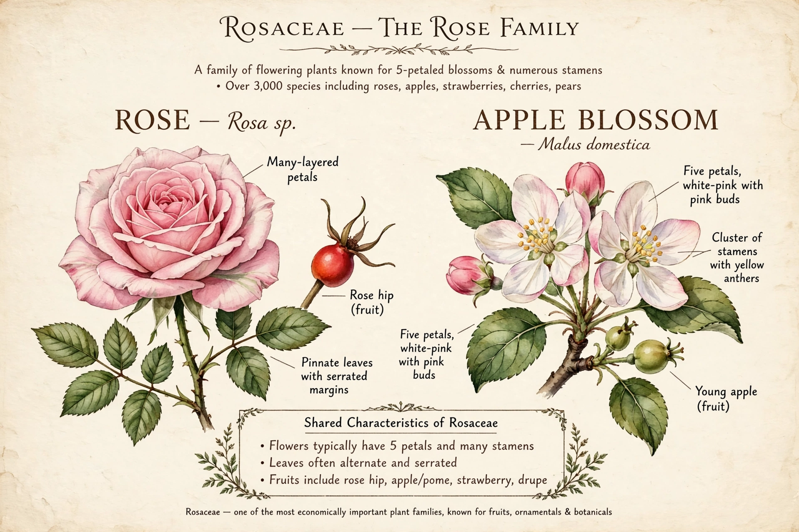

Rosaceae, the rose family, is a medium-sized family of flowering plants with about 4,800 known species in about 91 genera. It includes herbs, shrubs, and trees found worldwide, especially in the Northern Hemisphere.
The family supplies many of the world's most important fruits: apples, pears, quinces, loquats, peaches, plums (Prunus domestica), cherries (Prunus avium), almonds, strawberries, raspberries, and blackberries — many of them drupes or pomes.
Flowers are generally showy, often with five petals and numerous stamens, and frequently a hypanthium cup. Leaves are commonly alternate with stipules.
Modern systems recognise subfamilies including Rosoideae, Dryadoideae, and Amygdaloideae, the latter containing Prunus and the apple tribe Maleae.